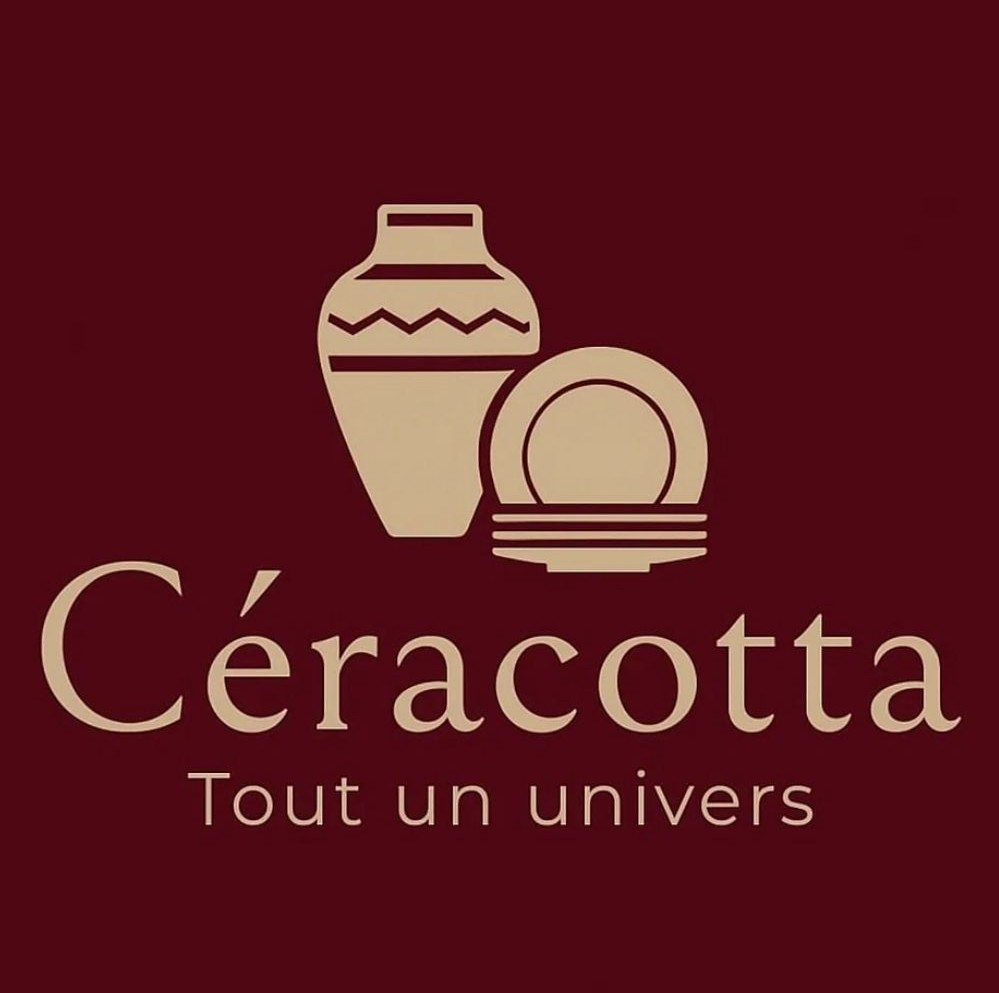

Notre histoire
Chez Céracotta, nous croyons en la beauté du geste, en la force du silence, et en la chaleur de l’imparfait. Chaque pièce que nous créons porte la trace de la main, le rythme du feu, et l’empreinte du temps.
Une maison artisanale
Fondée par une passionnée de matières naturelles, Céracotta est une maison de création céramique qui allie l’art du fait-main à une vision contemporaine du design. Chaque objet est pensé pour durer, sublimer l’usage quotidien et transmettre une émotion simple.

Un art de vivre
Céracotta invite à ralentir. Nos collections insufflent à chaque intérieur un souffle brut, organique, vivant. Inspirées par la nature et la terre, elles célèbrent l’équilibre entre simplicité et élégance.
Nos valeurs
- Authenticité
Chaque pièce est unique - Durabilité
Matières locales et responsables - Élégance
Simplicité intemporelle